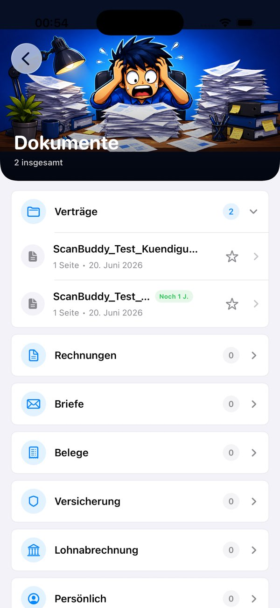
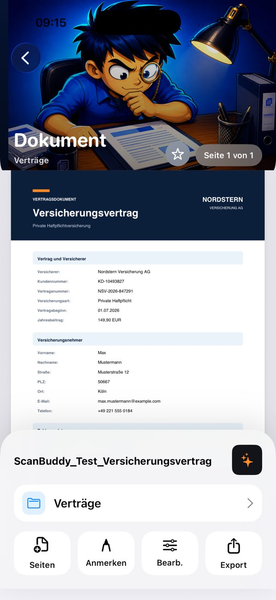

Dokumentenerkennung
Saubere Scans in Sekunden.
Dein digitales Dokumentenarchiv
Dokumente scannen, bearbeiten und sicher organisieren.


Vom Papier zum Dokument
ScanBuddy führt Aufnahme, Texterkennung, PDF-Bearbeitung und Ablage in einem nachvollziehbaren Arbeitsablauf zusammen.
Papierkram, neu gedacht
Schnelle Werkzeuge für deine Unterlagen.
Saubere Scans in Sekunden.
Texte erkennen, ohne Dokumente hochzuladen.
Dokumente direkt auf dem iPhone anpassen.
Formulare und Verträge einfach unterschreiben.
Scans bündeln und übersichtlich verwalten.
Keine wichtige Frist mehr verpassen.
Die Kamera erkennt Dokumentgrenzen und bereitet Aufnahmen für die weitere Bearbeitung vor.
Die Texterkennung macht Inhalte auffindbar, ohne Dokumente für die Analyse an einen fremden Server senden zu müssen.
Seiten, Dateien und Dokumentinformationen lassen sich bearbeiten und anschließend geordnet exportieren oder teilen.
Privacy by Design
Texterkennung und zentrale Bearbeitungsschritte erfolgen direkt auf dem Gerät.
Dokumente müssen für die Erkennung nicht an einen externen Analysedienst übertragen werden.
Ein Export oder eine Weitergabe erfolgt erst durch eine ausdrückliche Aktion des Nutzers.
Dokumente digitalisieren
ScanBuddy verwandelt iPhone und iPad in einen mobilen Dokumentenscanner für Briefe, Rechnungen, Verträge, Belege und mehrseitige Unterlagen.
Die Kamera erkennt Dokumentgrenzen, richtet die Perspektive aus und hilft bei der Optimierung von Helligkeit und Kontrast. Mehrseitige Schreiben lassen sich direkt nacheinander erfassen, kontrollieren und als gemeinsames Dokument speichern.
Die lokale Texterkennung macht gescannte Inhalte durchsuchbar und nutzbar. Dadurch findest du Namen, Beträge oder Begriffe in deinem Dokumentenarchiv schneller wieder und kannst erkannten Text für andere Aufgaben weiterverwenden.
Seiten können sortiert, ergänzt und zu einer PDF-Datei zusammengeführt werden. Vorhandene Bilder oder Dateien lassen sich importieren, Dokumente aufbereiten und anschließend gezielt exportieren, archivieren oder mit anderen Apps teilen.
ScanBuddy eignet sich für Rechnungen, Kassenbons, Garantiebelege und geschäftliche Unterlagen. Aussagekräftige Dateinamen, erkannter Text und eine geordnete Ablage helfen dabei, benötigte Nachweise später ohne langes Suchen wiederzufinden.
OCR und zentrale Bearbeitungsschritte laufen direkt auf dem Gerät. Vertrauliche Briefe, Verträge und persönliche Unterlagen müssen für die Texterkennung nicht an einen externen Analysedienst übertragen werden. Teilen oder exportieren erfolgt erst durch deine Aktion.
Ob Arztbrief, Unterrichtsmaterial, unterschriebener Vertrag oder Reisekostenbeleg: Der gemeinsame Arbeitsablauf aus Scannen, Erkennen, Bearbeiten und Ablegen reduziert den Wechsel zwischen Kamera-, OCR-, PDF- und Archiv-Apps.
Neben einzelnen Briefen und Belegen können auch mehrseitige Dokumente aufgenommen werden. Vorhandene Bilder und Dateien lassen sich ebenfalls importieren und in den Arbeitsablauf übernehmen. Damit eignet sich die App sowohl für neue Kamera-Scans als auch für Unterlagen, die bereits digital auf dem Gerät vorliegen.
ScanBuddy ist als Dokumentenscanner mit OCR ohne Abo konzipiert. Die App verbindet Aufnahme, lokale Texterkennung, Dokumentenorganisation und PDF-Bearbeitung, ohne dass für die laufende Nutzung ein automatisch verlängerndes Abonnement notwendig ist. Die jeweils aktuellen Konditionen und verfügbaren Funktionen stehen verbindlich im App Store.